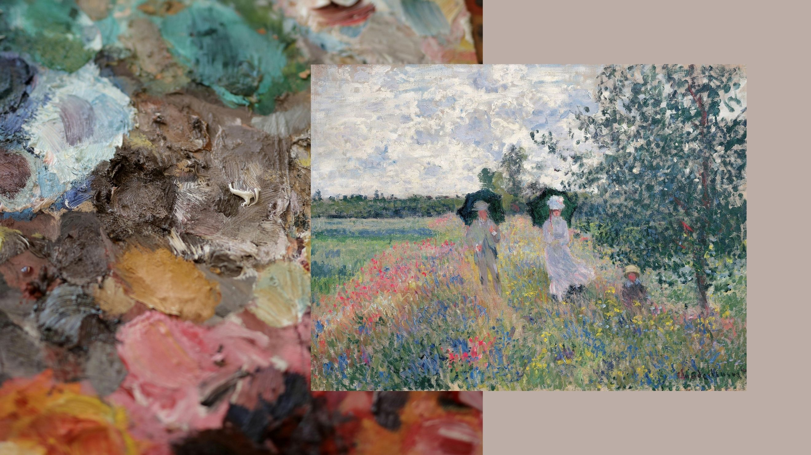
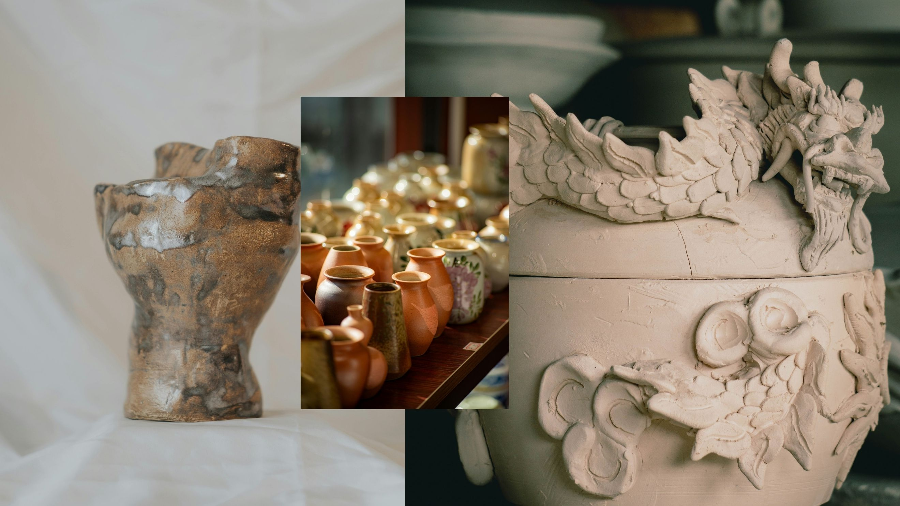

Mediums We Offer
Explore the pathways we provide for tactile and visual expression. Each program operates with professional-grade materials.

Painting Pathways
Learn structural color-mixing, line management, and layering with watercolors, acrylics, and oil paints.

Ceramics & Pottery
Master the pottery wheel, slab-building, and high-fire glaze compositions inside our kiln house.
External Learning Links
To deepen your theoretical understanding of color, view the official resource on Color Matters Theory or explore classical masterworks dynamically via the digital museum archives of The Metropolitan Museum of Art.